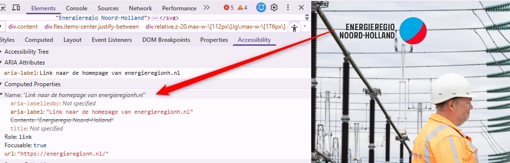
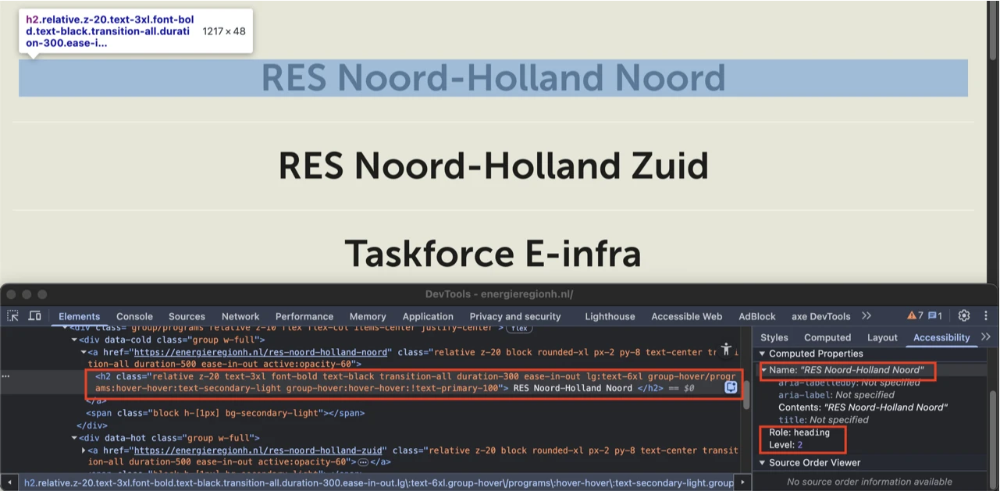
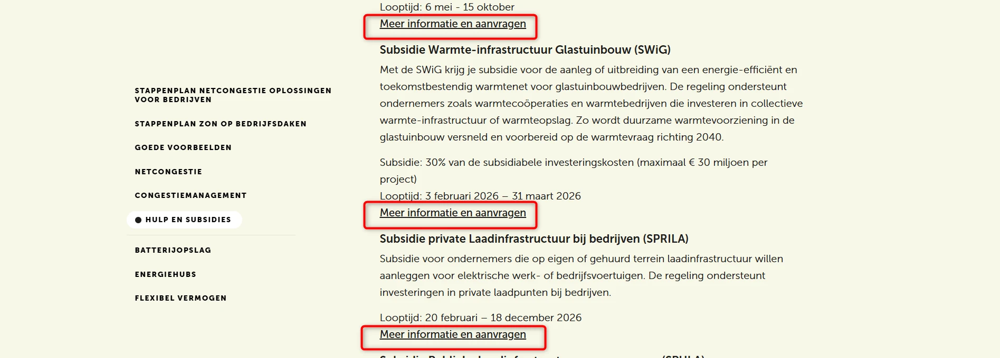

Hercontrole digitale toegankelijkheid van website energieregionh.nl
Samenvatting
Wij hebben de hercontrole van de website https://energieregionh.nl uitgevoerd tussen 5 en 7 mei 2026. We hebben alle eerder geconstateerde bevindingen opnieuw getoetst, en daarnaast nieuwe bevindingen meegenomen die tijdens de hercontrole aan het licht kwamen. In dit rapport lees je welke bevindingen zijn opgelost, welke nog openstaan en welke nieuw zijn.
#1 - Toegankelijke naam komt niet overeen met zichtbare tekst
Impact: MediumType: ContentWCAG: 2.5.3EN: 9.2.5.3

Het logo bovenaan de pagina toont zichtbaar de tekst “Energie regio Noord-Holland”. De toegankelijke naam van de link is echter ingesteld als “Link naar de homepage van energieregionh.nl”. De zichtbare tekst komt niet voor in de toegankelijke naam. Hierdoor kunnen gebruikers die spraakbediening gebruiken de link mogelijk niet activeren met de tekst die zij op het scherm zien. Wanneer zij de zichtbare tekst uitspreken, wordt de link mogelijk niet herkend omdat deze niet overeenkomt met de toegankelijke naam.
Oplossing:
Zorg ervoor dat de zichtbare tekst van het logo voorkomt in de toegankelijke naam van de link, bij voorkeur aan het begin. Idealiter is de toegankelijke naam gelijk aan de zichtbare tekst. Voorbeeld wijzig het aria-label-attribuut op het <a> element naar aria-label="Energie regio Noord-Holland – ga naar homepage".
#2 - Links in het hoofdmenu geven onterecht aan dat ze de huidige pagina zijn
In het bovenste menu opent de knop “Menu” het navigatiemenu. De links in het hoofdmenu bevatten het attribuut aria-current="page", ongeacht welke pagina op dat moment actief is. Het attribuut aria-current is bedoeld om binnen een reeks gerelateerde navigatie-elementen alleen het actuele item aan te duiden, dus de pagina of sectie die op dat moment geopend is. Wanneer elke link in het navigatiemenu aria-current="page" bevat, kondigen hulpsoftware zoals schermlezers onterecht elk item aan als de huidige pagina.
Oplossing:
Zorg dat het attribuut aria-current="page" alleen wordt toegepast op de navigatielink die de momenteel geopende pagina vertegenwoordigt.
#3 - Relatie tussen links in een groep is niet in HTML vastgelegd
In de footer staat een groep links die visueel als een groep worden gepresenteerd, maar deze groepering is niet terug te zien in de HTML-structuur. Het gaat om de links “Privacy”, “Colofon” en “Toegankelijkheidsverklaring”. Als het voor een ziende bezoeker duidelijk is dat een groep links bij elkaar hoort, dan moet die structuur ook in de HTML-code aanwezig zijn.
Op deze pagina komt de toetsenbordfocus, na de knop “Menu”, op een onzichtbaar interactief element terecht. De toetsenbordfocus mag niet terechtkomen op onzichtbare interactieve elementen (links, knoppen, formuliervelden). Als dat wel gebeurt, kan een bezoeker ze onbedoeld activeren.
Oplossing:
Zorg dat alleen elementen die zichtbaar zijn toetsenbordfocus kunnen krijgen en dat de focusvolgorde logisch is.
#5 - Link bestaat uit een afbeelding, linkdoel is onbekend
Bovenaan deze pagina staat een pijl die naar beneden wijst. Deze pijl fungeert als link, maar het tekstalternatief ontbreekt, waardoor de link niet toegankelijk is. De afbeelding is dus interactief. Er is geen tekstalternatief. Daardoor heeft de link geen inhoud. Om deze link toegankelijk te maken, moet de afbeelding een tekstalternatief krijgen dat het linkdoel beschrijft. Zo weten bezoekers die schermlezers gebruiken waar de link naartoe leidt.
Oplossing:
Je lost dit op door de link te voorzien van toegankelijke, tekstuele inhoud. Dit kun je als volgt doen:
Verborgen tekst aan de link toevoegen: voeg beschrijvende tekst toe in het a-element, die je visueel verbergt met CSS (bijvoorbeeld met de class .sr-only).
aria-label gebruiken: voeg een aria-label-attribuut toe aan het a-element met een beknopte beschrijving van de bestemming van de link.
#6 - Kop-element gebruikt voor tekst die geen kop is
Impact: MediumType: ContentWCAG: 1.3.1EN: 9.1.3.1

Op deze pagina staan linkteksten die geen koppen zijn, maar onterecht zijn opgemaakt met een h2-element. Het gaat om de teksten: “RES Noord-Holland Noord”, “RES Noord-Holland Zuid”, “Taskforce E-infra” en “Warmte”. Het kop-element (h2) is niet betekenisvol gebruikt, maar alleen om een visueel effect te bereiken. De tekst die als kop is gemarkeerd, is geen echte kop. Er staat namelijk geen inhoud onder. Maar door het h2-element krijgt de tekst wel deze betekenis. Kop-elementen zijn bedoeld om structuur te geven aan de informatie op een pagina. Mensen die schermlezers gebruiken, vertrouwen op de koppen om door de pagina te navigeren en de opbouw te begrijpen. Gebruik kop-elementen daarom niet alleen om een visueel effect te bereiken, zoals een grotere, schuin- of vetgedrukte tekst. Zorg dat de tekst die je in een kop-element zet ook echt de functie van kop of tussenkop heeft.
Op deze pagina staan de links “RES Noord-Holland Noord”, “RES Noord-Holland Zuid”, “Taskforce E-infra” en “Warmte”. Wanneer een van deze links wordt aangewezen met de muis, krijgen de overige links de kleur lichtbeige (#F7F7E7) op een lichtgrijze achtergrond (#E5E5D6). De contrastratio is dan te laag: 1,2:1. Wanneer de link “RES Noord-Holland Noord” wordt aangewezen, krijgt de linktekst de kleur blauw (#3AA7DF) op de lichtgrijze achtergrond (#E5E5D6). De contrastratio is 2,1:1. Wanneer de link “Taskforce E-infra” wordt aangewezen, krijgt de linktekst de kleur groen (#34A853) op de lichtgrijze achtergrond (#E5E5D6). De contrastratio is 2,4:1. Wanneer de link “Warmte” wordt aangewezen, krijgt de linktekst de kleur oranje (#ED6B00) op de lichtgrijze achtergrond (#E5E5D6). De contrastratio is 2,5:1.
Oplossing:
Deze tekst is groter dan 24px, daarom moet het contrast minimaal 3,0:1 zijn. Op deze pagina staat een instructie die uitlegt hoe je kleurcontrast kan testen: https://properaccess.nl/hoe-test-ik-kleurcontrast/
Op deze pagina staat in de sectie “Inspirerende verhalen” het artikel “Samenwerken om te groeien: energiehub in Beverwijk biedt ruimte bij netcongestie”. De volgorde van HTML-elementen binnen dit artikel is niet logisch: de tekst en de link naar de video staan boven de kop. De huidige volgorde is de link naar de video, de tekst “Van Hoe naar Zo”, de kop en daarna de tekst. Wanneer een schermlezer deze pagina van boven naar beneden voorleest, is niet duidelijk welke inhoud (link en/of tekst) bij deze kop hoort. Dit komt doordat de kop niet bovenaan in de code van het artikel staat. Dit kan verwarrend zijn voor bezoekers die een schermlezer gebruiken. Een vergelijkbaar probleem komt voor bij de artikelen in de sectie “Doe ook mee”. De volgorde van HTML-elementen in deze artikelen is: tekst zoals “kennissessie”, datum en tijd, kop en daarna de tekst “Meld je aan”.
Oplossing:
Je lost dit op door alle inhoud die bij een bepaalde kop hoort, in de code onder die kop te plaatsen. Dit zorgt voor een logische structuur. De visuele vormgeving mag wel afwijken.
#9 - Toetsenbordfocus is niet zichtbaar
Impact: GrootType: TechniekWCAG: 2.4.7EN: 9.2.4.7
Op deze pagina is de toetsenbordfocus niet zichtbaar op de link met de tekst “Van Hoe naar Zo Samenwerken om te groeien: energiehub in Beverwijk biedt ruimte bij netcongestie” in de sectie “Inspirerende verhalen”. De toetsenbordfocus moet altijd zichtbaar zijn op interactieve elementen zoals links, knoppen en invoervelden die met het toetsenbord focus kunnen krijgen. Bezoekers die met het toetsenbord navigeren moeten goed kunnen zien op welke plek van de pagina ze zijn. Anders weten ze niet op welk moment ze op Enter moeten drukken om een knop of link te bedienen.
Hetzelfde probleem met een onzichtbare focusindicator doet zich voor bij het selectievakje “Door je in te schrijven … alleen voor dit doel” onder het “Nieuwsbrief” formulier.
Oplossing:
Zorg dat de toetsenbordfocus zichtbaar is op de genoemde elementen.
#10 - De kleur van de rand van het invoerveld heeft niet genoeg contrast
Op deze pagina staat onder de kop “Nieuwsbrief” een formulier met invoervelden. De contrastratio tussen de lichtgrijze rand van de velden (#CCCCCC) en de lichtgele achtergrond (#F7F7E7) is 1,5:1.
Hetzelfde probleem met onvoldoende contrast van de rand van het element doet zich voor bij het selectievakje “Door je in te schrijven … alleen voor dit doel” onder het formulier.
Oplossing:
De randen van interactieve elementen zoals invoervelden moeten minimaal een contrast van 3,0:1 hebben met de achtergrond.
#11 - Zichtbare tekst van het label staat niet in de toegankelijke naam
Op deze pagina staat onder de kop “Nieuwsbrief” een formulier met invoervelden. De toegankelijke namen van de invoervelden komen niet overeen met de zichtbare placeholderteksten (succescriterium 2.5.3). Dit kan problemen veroorzaken voor gebruikers van spraakbesturing. Daarnaast zijn de toegankelijke namen in het Engels, terwijl de website in het Nederlands is (succescriterium 3.1.2). Bijvoorbeeld: het veld “Voornaam” heeft de toegankelijke naam “name”. Andere velden hebben hetzelfde probleem.
Daarnaast hebben de invoervelden geen permanente zichtbare labels. Placeholdertekst is geen vervanging voor een label, omdat deze verdwijnt zodra de gebruiker begint te typen. Hierdoor kan onduidelijk zijn welke informatie in een veld verwacht wordt (succescriterium 3.3.2).
Oplossing:
Zorg ervoor dat elk invoerveld een permanente zichtbare label heeft die overeenkomt met de toegankelijke naam. Gebruik dezelfde taal als de rest van de website en vermijd Engelstalige toegankelijke namen op een Nederlandstalige pagina.
Op deze pagina wordt onder de kop “Blijf op de hoogte” HTML5-validatie gebruikt in het formulier. Wanneer het formulier wordt verzonden met lege of onjuiste gegevens, worden standaard HTML5-foutmeldingen weergegeven. Deze foutmeldingen worden niet door alle browsers en schermlezers even goed ondersteund. Elke browser toont de meldingen anders, en niet altijd op een toegankelijke manier: de melding is soms kortaf en onvolledig.
Oplossing:
Voeg altijd zelf foutmeldingen toe aan het formulier. Controleer of er nog meer formulieren zijn die dit probleem hebben.
#13 - strong-element in plaats van kop-element
Impact: MediumType: ContentWCAG: 1.3.1EN: 9.1.3.1
Op deze pagina openen de links onder de kop “Wie doen er mee?”, zoals “Kop van Noord-Holland”, een dialoogvenster. In dit dialoogvenster staan teksten die onterecht zijn opgemaakt met het strong-element in plaats van met juiste kop-elementen. Het gaat om de teksten: "Deelnemende gemeenten", "Partners" en "Contactgegevens". Het strong-element is niet bedoeld om koppen mee te markeren. Je moet dat altijd doen met een kop-element, zoals h2. Koppen gebruik je om een tekst te structureren. Alleen als je ze als kop markeert met een kop-element, begrijpt hulpsoftware die betekenis. Het strong-element gebruik je wel als je nadruk wilt geven aan enkele woorden of een zinsdeel.
Oplossing:
Verwijder het strong-element en gebruik de juiste kop-elementen om deze koppen te markeren, zoals h2 of h3.
#14 - Volgorde toetsenbordfocus is niet logisch
Impact: GrootType: TechniekWCAG: 2.4.3EN: 9.2.4.3
Op deze pagina openen de links onder de kop “Wie doen er mee?”, zoals “Kop van Noord-Holland”, een dialoogvenster. In dit dialoogvenster staan pijltjesknoppen waarmee bezoekers naar het volgende of vorige dialoogvenster kunnen navigeren. Wanneer met de Tab-toets wordt genavigeerd, komt de toetsenbordfocus niet op deze knoppen terecht. Bij gebruik van Shift + Tab komt de focus wél op deze knoppen. Daarnaast blijft de toetsenbordfocus, na het bereiken van de link “denhelder.nl” tijdens het achterwaarts navigeren met Shift + Tab, alleen heen en weer bewegen tussen deze link en de pijltjesknoppen. Deze volgorde van de toetsenbordfocus is niet logisch. Als bezoekers met het toetsenbord door de website navigeren, moeten interactieve elementen zoals knoppen en links op een logische volgorde toetsenbordfocus krijgen. Logisch betekent dat het aansluit op de volgorde die de elementen hebben in de visuele vormgeving. Anders kunnen bezoekers die alleen een toetsenbord gebruiken, minder makkelijk door de pagina navigeren. Het gaat dan bijvoorbeeld om mensen met een motorische of visuele beperking of een leesstoornis.
Oplossing:
Zorg dat de toetsenbordfocus op een logische en voorspelbare manier langs alle interactieve elementen beweegt. Neem de pijltjesknoppen op in de natuurlijke Tab-volgorde en voorkom dat de focus blijft hangen tussen elementen.
#15 - Er staan twee koppen van hetzelfde niveau direct onder elkaar
Impact: MediumType: ContentWCAG: 1.3.1EN: 9.1.3.1
Op deze pagina wordt een kop van niveau 2 direct gevolgd door een andere kop van hetzelfde niveau. Zie “Liever persoonlijk contact?” en “Wies Thesingh”. Als twee koppen van hetzelfde niveau direct onder elkaar staan zonder inhoud ertussen, dan is één van de koppen niet op de goede manier gebruikt. Direct onder het eerste h2-element mag een h3-element komen of andere content, maar niet nog een keer een h2-element of een h1-element.
Op deze pagina wordt onder de kop "Zo pak je batterijopslag aan" het strong-element onjuist gebruikt voor opmaakdoeleinden. Hele zinnen zijn met het strong-element omgeven om ze vet weer te geven. Het strong-element heeft een semantische waarde: het geeft een bepaalde betekenis aan de tekst die erin staat. Dit element geeft aan dat de tekst extra nadruk moet krijgen. Om die reden mag dit element niet gebruikt worden om alleen een visueel effect te bereiken (vetgedrukte tekst).
Oplossing:
Verwijder de onnodige strong-elementen en gebruik CSS om de tekst vet te maken.
Op deze pagina, onder de kop "Wat kun je verwachten?", is het strong-element onjuist gebruikt voor opmaakdoeleinden, waarschijnlijk om de tekst vet te maken.
Oplossing:
Verwijder de onnodige strong-elementen en gebruik CSS om de tekst vet te maken.
Op deze pagina staan onder “Gerelateerde content” artikelen waarbij de volgorde van HTML-elementen niet logisch is. De teksten staan boven de kop waar ze bij horen. De huidige volgorde is de datum, bijvoorbeeld “10 januari 2025”, daarna de kop en vervolgens de linktekst.
Oplossing:
Je lost dit op door alle inhoud die bij een bepaalde kop hoort, in de code onder die kop te plaatsen. Dit zorgt voor een logische structuur. De visuele vormgeving mag wel afwijken.
#19 - Er zijn links met dezelfde tekst maar een andere bestemming
Impact: MediumType: ContentWCAG: 2.4.4EN: 9.2.4.4

Op deze pagina staan meerdere links met de tekst "Meer informatie en aanvragen", maar de bestemming van deze links is verschillend. Er zijn dus meerdere links aanwezig op de pagina met dezelfde tekst, maar een verschillend linkdoel. Dit kan verwarrend zijn voor bezoekers.
Oplossing:
Zorg dat links met dezelfde tekst ook naar dezelfde bestemming leiden. Als het om een andere bestemming gaat, moet de linktekst ook anders zijn.
#20 - Decoratieve afbeelding is niet verborgen voor schermlezers
Impact: MediumType: ContentWCAG: 1.1.1EN: 9.1.1.1
Op deze pagina staat bovenaan een decoratieve afbeelding. Het tekstalternatief is "infra". Een decoratieve afbeelding geeft geen extra informatie en moet daarom verborgen worden voor schermlezers.
Oplossing:
Je kunt dit op verschillende manieren bereiken:
Voor img-elementen gebruik je een leeg alt-attribuut: alt=””.
Met aria-hidden=”true” kun je decoratieve afbeeldingen verbergen voor schermlezers.
Op deze pagina staat in de filtersectie een groep select-elementen. Deze groep heeft het groepslabel “Onderwerpen”, maar dit label is niet programmatisch gekoppeld aan de bijbehorende groep. Hierdoor weten bezoekers die een schermlezer gebruiken niet dat er een relatie is tussen de groeplabel en de bijbehorende groep.
Oplossing:
Zorg dat het groeplabel in de code expliciet is gekoppeld aan de groep. Dit kun je bijvoorbeeld doen met het role=”group” en het aria-labelledby-attribuut, of door het formulier op de juiste manier te structureren met fieldset- en legend-elementen.
#22 - Het selecteren van een optie in de filters veroorzaakt een verandering van context
Impact: GrootType: TechniekWCAG: 3.2.2EN: 9.3.2.2
Op deze pagina veroorzaken de select-elementen in de filtersectie een herladen van de pagina en een verschuiving van de toetsenbordfocus zodra een optie wordt geselecteerd. Dit kan voor veel bezoekers verwarrend zijn. De context mag niet automatisch veranderen als een bezoeker iets aanpast in een formulier (zoals het aanvinken van een keuzevakje) of in een ander element van de gebruikersinterface. Het mag wel als de bezoeker van tevoren duidelijk is gewaarschuwd. Contextveranderingen zijn bijvoorbeeld het openen van een nieuw venster, het verschuiven van de toetsenbordfocus naar een ander element en het insturen van een formulier.
Oplossing:
Zorg dat de context niet automatisch verandert, of waarschuw bezoekers van tevoren duidelijk dat dit gaat gebeuren.
Op deze pagina staan artikelen waarbij de volgorde van HTML-elementen binnen elk artikel niet logisch is. De teksten staan boven de kop waar ze bij horen. De huidige volgorde is de tekst, bijvoorbeeld “goede voorbeelden”, daarna de datum zoals “17 april 2026”, vervolgens de kop en daarna de tekst. Wanneer een schermlezer deze pagina van boven naar beneden voorleest, is niet duidelijk welke inhoud bij welke kop hoort. Dit komt doordat de kop niet bovenaan in de code van het artikel staat. Dit kan verwarrend zijn voor bezoekers die een schermlezer gebruiken.
Oplossing:
Je lost dit op door alle inhoud die bij een bepaalde kop hoort, in de code onder die kop te plaatsen. Dit zorgt voor een logische structuur. De visuele vormgeving mag wel afwijken.
#24 - Links in de paginering geven onterecht aan dat ze de huidige pagina zijn
Op deze pagina staat onder de artikelen een paginering. De huidige pagina wordt visueel aangegeven, maar niet in de code. De links naar de andere pagina’s bevatten wel het attribuut aria-current=”page”. Het attribuut aria-current is bedoeld om binnen een reeks gerelateerde navigatie-elementen alleen het actuele item aan te duiden, dus de pagina of sectie die op dat moment is geopend. Wanneer elk item in de paginering het attribuut aria-current=”page” bevat, kondigen hulpsoftware zoals schermlezers onterecht elk item aan als de huidige pagina.
Oplossing:
Zorg dat het attribuut aria-current=”page” alleen wordt toegepast op het pagineringsitem dat de momenteel geopende pagina weergeeft.
Op deze pagina missen de items in de paginering voldoende context. Voor ziende bezoekers is duidelijk dat "1", "2", "3" enzovoort de paginanummers aanduiden, maar dit is niet duidelijk voor bezoekers die schermlezers gebruiken.
Oplossing:
Je verbetert dit door de paginanummers aan te vullen met het (visueel verborgen) woord "pagina”.
#26 - Onderstreping van de huidige pagina in paginering heeft niet genoeg contrast
Op deze pagina is de huidige pagina in de paginering onderstreept. Het contrast tussen de blauwe lijn (HEX #3AA7DF) en de beige achtergrond (HEX #F7F7E7) is 2,5:1.
Oplossing:
Zorg dat het contrast tussen de kleur van de onderstreping en de achtergrond minimaal 3,0:1 is.
#27 - Afbeelding zonder tekstalternatief is de enige inhoud van een link
Op deze pagina bevat de paginering links met pijliconen. Deze pijliconen hebben geen tekstalternatief, waardoor de links niet toegankelijk zijn. De afbeelding is dus interactief. Er is geen tekstalternatief. Daardoor heeft de link geen inhoud (dit zorgt ook voor afkeur op succescriterium 2.4.4 en 4.1.2).
Oplossing:
Om deze links toegankelijk te maken, moeten de afbeeldingen een tekstalternatief krijgen dat het linkdoel beschrijft. Zo weten bezoekers die schermlezers gebruiken waar de links naartoe leiden.
Op deze pagina staat onder de sectie “Specifieke uitkering regionale ondersteuningsstructuur NPLW” een groep links die visueel als een groep worden gepresenteerd, maar deze groepering is niet terug te zien in de HTML-structuur. Het gaat om de links “Subsidieregelingen Energietransitie Provincie Noord-Holland”, “De Noord-Hollandse Klimaataanpak” en “Servicepunt Duurzame Energie”.
Oplossing:
Neem de elementen op in een ul-`-element. Andere oplossingen zijn mogelijk.
#29 - Een visueel enkele link is opgesplitst in meerdere links
Op deze pagina staat onder de kop “Noord-Hollandse aanpak van de warmtetransitie” de linktekst “In de Noord-Hollandse klimaataanpak”. Deze tekst wordt visueel als één doorlopende link gepresenteerd, maar is in de code opgesplitst in twee aparte a-elementen die allebei naar dezelfde bestemming verwijzen. Ditzelfde probleem komt voor bij de link “subsidieregelingen” onder de kop “Subsidies”, waarbij de tekst is opgesplitst in drie afzonderlijke links met dezelfde bestemming. Dit zorgt voor onnodige focusstops en kan verwarrend zijn voor gebruikers van schermlezers en het toetsenbord.
Oplossing:
Combineer elke visueel doorlopende link tot één a-element, zodat de volledige gelinkte tekst één toegankelijke link vormt met één focusgebied.
#30 - strong-element in plaats van kop-element
Impact: MediumType: ContentWCAG: 1.3.1EN: 9.1.3.1
Op deze pagina staan in de sectie “Contact” de teksten "Peter Korbee" en "Pim van Herk" onterecht opgemaakt met het strong-element in plaats van met juiste kop-elementen.
Oplossing:
Verwijder het strong-element en gebruik de juiste kop-elementen om deze koppen te markeren, zoals h2 of h3.
Op deze pagina staat onder “Bekijk de video Meervoudig Ruimtegebruik” een link die een afbeelding bevat met een videovoorvertoning. Deze afbeelding heeft geen tekstalternatief. Hierdoor heeft deze link geen toegankelijke naam. Daardoor heeft de link geen inhoud en is het onduidelijk naar welke bestemming de link verwijst. Dit zorgt ook voor afkeur op succescriterium 4.1.2, want de link heeft hierdoor ook geen toegankelijke naam.
Bovendien is binnen dit linkelement een knop-element (zonder toegankelijke naam) genest, waardoor conflicterende interactieve elementen ontstaan die problemen kunnen veroorzaken voor toetsenbord- en screenreadergebruikers.
Oplossing:
Je lost dit op door de link te voorzien van toegankelijke, tekstuele inhoud. Dit kun je als volgt doen:
Verborgen tekst aan de link toevoegen: voeg beschrijvende tekst toe in het a-element, die je visueel verbergt met CSS (bijvoorbeeld met de class .sr-only).
aria-label gebruiken: voeg een aria-label-attribuut toe aan het a-element met een beknopte beschrijving van de bestemming van de link.
Bekijk hoe alle problemen met de linknaam en de geneste knop in een vergelijkbare video zijn opgelost op de Homepagina.
#32 - strong-element in plaats van kop-element
Impact: MediumType: ContentWCAG: 1.3.1EN: 9.1.3.1
Op deze pagina zijn de volgende teksten onterecht opgemaakt met het strong-element in plaats van met juiste kop-elementen: "Aan de slag: hoe pak je meervoudig ruimtegebruik aan?", "2. Check de stimuleringsregelingen", "3. Bekijk nieuws en praktijkvoorbeelden" en andere teksten. De tekst “Laat je inspireren” is ook een kop, maar is onjuist opgemaakt met de ol- en strong-elementen.
Oplossing:
Verwijder het strong-element en gebruik de juiste kop-elementen om deze koppen te markeren, zoals h2 of h3.
#33 - Kop is niet gemarkeerd als koptekst
Impact: MediumType: ContentWCAG: 1.3.1EN: 9.1.3.1
Op deze pagina zijn de volgende teksten niet opgemaakt als koppen: "Energietuinen", "Eerste coöperatieve project met verticale zonnepanelen staat in Culemborg" en "Rijdende zonnepanelen zijn nog maar het begin".
Oplossing:
Dit voorkom je door koppen altijd te markeren met het juiste HTML-element, op het juiste kopniveau: h1, h2, h3, h4, h5 of h6. Meestal kun je het kopniveau kiezen via de content-editor in je CMS. De HTML-code voor de kop wordt dan automatisch toegepast. Op deze pagina staat een instructie hoe je zelf koppen op een webpagina kan testen: https://properaccess.nl/zo-controleer-je-de-koppenstructuur-van-je-website/.
#34 - Relatie tussen links in een groep is niet in HTML vastgelegd
Op deze pagina staat onder "5. Zoek contact met mensen die kunnen helpen" een groep links die visueel als een groep worden gepresenteerd, maar deze groepering is niet terug te zien in de HTML-structuur. Ditzelfde probleem komt voor in de sectie die wordt geopend via “Meervoudig ruimtegebruik met een subsidieregeling”, bij de links onder “Andere regelingen provincie Noord-Holland zijn:”, bij de links in de sectie die wordt geopend via “Informatie opwek langs snelwegen” en in andere secties.
Oplossing:
Neem de elementen op in een ul-element. Andere oplossingen zijn mogelijk.
Op deze pagina staan onder “Gerelateerde content” artikelen waarbij de volgorde van HTML-elementen niet logisch is. De teksten staan boven de kop waar ze bij horen. De huidige volgorde is de datum, bijvoorbeeld “2 november 2023”, daarna de kop en vervolgens de tekst.
Oplossing:
Je lost dit op door alle inhoud die bij een bepaalde kop hoort, in de code onder die kop te plaatsen. Dit zorgt voor een logische structuur. De visuele vormgeving mag wel afwijken.
#36 - strong- en em-element is gebruikt voor opmaak
Impact: KleinType: ContentWCAG: 1.3.1EN: 9.1.3.1
Op deze pagina worden de elementen strong en em onjuist gebruikt voor opmaakdoeleinden in de tekst die begint met “Roos Peeters neemt afscheid …”. De elementen strong en em hebben een semantische waarde: ze geven een bepaalde betekenis aan de tekst die ze bevatten. Beide elementen geven aan dat de tekst extra nadruk moet krijgen. Om die reden mag je deze elementen niet gebruiken om alleen een visueel effect te bereiken (vetgedrukt of cursief). Gebruik hiervoor CSS.
Oplossing:
Verwijder de onnodige em- en strong-elementen en gebruik CSS om de tekst vet- of schuingedrukt te maken.
Op deze pagina, onder de kop “Waarom zou je nu instappen?”, wordt visueel een lijst met drie items weergegeven. Elk item is echter onjuist gecodeerd als een afzonderlijk ol-element in plaats van als onderdeel van één geordende lijst. Daarnaast is de bijbehorende tekst niet opgenomen binnen het bijbehorende li-element. Hierdoor wordt deze inhoud door hulpsoftware, zoals schermlezers, niet herkend als één samenhangende geordende lijst, wat voor verwarring zorgt en de leesvolgorde verstoort.
Op deze pagina ontbreekt het title-element. Dit element moet op elke pagina aanwezig zijn en unieke tekst bevatten die de inhoud van de pagina beschrijft, bij voorkeur gevolgd door de naam van de organisatie. Deze tekst wordt getoond in de tab van de browser. Met een duidelijke beschrijving kunnen gebruikers makkelijker navigeren tussen verschillende pagina’s.
Oplossing:
Voeg het title-element toe aan de pagina en zet er een duidelijke, beschrijvende tekst in.
#39 - Kop is niet gemarkeerd als koptekst
Impact: MediumType: ContentWCAG: 1.3.1EN: 9.1.3.1
Op deze pagina zijn de teksten in de zoekresultaten niet opgemaakt als koppen. Het gaat bijvoorbeeld om "Energietransitie in uw verkiezingsprogramma", "Kennissessie ‘Slim samenwerken aan energie-infrastructuur’", "Servicepunt Duurzame Energie" en andere teksten.
Oplossing:
Dit voorkom je door koppen altijd te markeren met het juiste HTML-element, op het juiste kopniveau: h1- h6. Meestal kun je het kopniveau kiezen via de content-editor in je CMS. De HTML-code voor de kop wordt dan automatisch toegepast.
#40 - Link heeft geen tekst, waardoor linkdoel onbekend is
Wanneer deze pagina wordt bekeken met een schermresolutie van 1280 bij 1024 pixels en er wordt ingezoomd tot 400%, verschijnt er een schuifbalk. Horizontaal scrollen is niet toegestaan, ook niet als de viewport is ingesteld of ingezoomd op 320 CSS-pixels breed (voor verticale inhoud) of 256 CSS-pixels hoog (voor horizontale inhoud). Zorg ervoor dat de tekst binnen het scherm past. Alleen als scrollen in beide richtingen echt nodig is voor de betekenis of het gebruik van de inhoud mag het wel. Uitzonderingen zijn tabellen, betekenisvolle afbeeldingen en kaarten. Deze moeten leesbaar blijven, dus binnen deze elementen mag je wel scrollen.
Oplossing:
Controleer of het horizontaal scrollen nodig is. Als dit niet zo is, zorg dan dat horizontaal scrollen niet mogelijk is bij inzoomen.
Op deze pagina staan koppen zoals “Netcongestie raakt ons allemaal”, “Congestiemanagement: slimmer omgaan met ons net”, “Hoe werkt dat in de praktijk?” en andere. In deze koppen worden zowel het heading-element als het strong-element gebruikt. Het strong-element heeft een semantische waarde. Het geeft een bepaalde betekenis aan de tekst die erin staat, namelijk dat de tekst extra nadruk moet krijgen. Om die reden mag je dit element niet gebruiken om alleen een visueel effect te bereiken (vetgedrukt).
Oplossing:
Verwijder het strong-element.
#43 - Relatie tussen links in een groep is niet in HTML vastgelegd
Op deze pagina staat onder de sectie “Inspirerend voorbeeld uit Leeuwarden” een groep links die visueel als een groep worden gepresenteerd, maar deze groepering is niet terug te zien in de HTML-structuur. Als het voor een ziende bezoeker duidelijk is dat een groep links bij elkaar hoort, dan moet die structuur ook in de HTML-code aanwezig zijn.
Oplossing:
Neem de elementen op in een ul-element. Andere oplossingen zijn mogelijk.
Selecteer in het veld Taal de juiste taal voor het document, bijvoorbeeld Nederlands (Dutch).
Klik op OK en sla het bestand op.
#45 - Structuur van pdf-document is niet in codes vastgelegd
Impact: MediumType: ContentWCAG: 1.3.1EN: 9.1.3.1
In het PDF-document op URL ontbreken codes, waardoor de inhoud niet toegankelijk is voor schermlezers. Ditzelfde probleem komt voor bij het PDF-document op https://energieregionh.nl/media/pages/medialibrary/55794f8d84-1730806589/energielangssnelwegen_landschapstalks_2022_pages.pdf. Bovendien kunnen wij de pdf hierdoor niet volledig onderzoeken. Het gaat om alle succescriteria die met de pdf-codelaag te maken hebben, zoals semantische koppen en alternatieve teksten bij afbeeldingen. Als je dit oplost, is het dus mogelijk dat er nieuwe toegankelijkheidsproblemen ontstaan die nu nog niet aan het licht zijn gekomen.
Oplossing:
Voeg codes toe aan het document die de structuur van het document weergeven.
In het PDF-document op URL is geen titel ingesteld in de bestandseigenschappen. Zelfs als er een titel op de eerste pagina staat, moet je in de PDF-instellingen ook een documenttitel instellen. Als je een pdf opent in een pdf-lezer (zoals Adobe Acrobat of een browser), zie je de bestandsnaam meestal bovenaan in de titelbalk, bijvoorbeeld document123.pdf. Maar als je een documenttitel in de pdf-metadata instelt, dan wordt die titel in plaats van de bestandsnaam getoond. Dit maakt het document toegankelijker voor bezoekers met verschillende beperkingen. Zij kunnen dan snel en gemakkelijk zien of het document relevant is.
Oplossing:
Open het pdf-document in Adobe Acrobat.
Ga naar Bestand > Eigenschappen.
Ga naar het tabblad Beschrijving.
Vul in het veld Titel een beschrijvende titel in, bijvoorbeeld: "Rapport: Bevolkingscijfers 2023".
Klik op OK en sla het bestand op.
#47 - Kleurcontrast van kleine tekst is te laag
Impact: MediumType: ContentWCAG: 1.4.3EN: 9.1.4.3
In het PDF-document op URL staat grijze tekst (#939393) met de tekst “LANDSCHAP VAN DE TOEKOMST” op een witte achtergrond. Zie bijvoorbeeld pagina 3. De contrastratio is te laag: 3,1:1. Op pagina 8 staat witte tekst op een lichtgroene achtergrond (#B8D3D5). De contrastratio is 1,6:1.
Oplossing:
Zorg dat het contrast minimaal 4,5:1 is.
Over dit onderzoek
Leeswijzer
Onze rapporten zijn anders. Bij het bespreken van de gevonden problemen volgen wij niet de structuur van de norm, maar die van jouw website of app. Hierdoor kun je gewoon per pagina of scherm aan de slag gaan. Wel zo makkelijk! Je vindt verderop een overzicht van alle pagina’s met problemen.
We geven je bij elk gevonden issue een paar voorbeelden, maar niet een complete lijst. Controleer zelf of het probleem ook nog op andere plekken voorkomt. Zie het rapport als een leidraad.
Gebruikte norm
Dit onderzoek laat zien in hoeverre de website op dit moment voldoet aan WCAG 2.2, niveau A en AA. WCAG staat voor Web Content Accessibility Guidelines. Dit is de internationale norm voor digitale toegankelijkheid. De Europese norm EN 301 549 bevat alle eisen van WCAG op niveau A en AA.
In dit rapport hebben we korte beschrijvingen van de succescriteria uit de norm opgenomen, met een algemene uitleg erbij. Wil je ze helemaal lezen? Bekijk dan de documentatie van WCAG.
Gebruikte onderzoeksmethode
We gebruiken de onderzoeksmethode WCAG-EM van het W3C. Het proces ziet er als volgt uit:
vaststellen wat binnen en buiten scope valt
vaststellen welke technologieën zijn gebruikt
steekproef (sample) samenstellen
steekproef onderzoeken
gevonden issues beschrijven
Het grootste deel van het onderzoek doen we met de hand. Voor een deel van de toegankelijkheidseisen gebruiken we automatische tools als ondersteuning, zoals axe-core en Chrome Developer Tools.
Belangrijk om te weten
Dit rapport helpt je om de toegankelijkheid van je website te verbeteren. Maar let op: het is geen definitieve, volledige lijst van alle aanwezige toegankelijkheidsproblemen. Dat zit zo:
Het is een steekproef
Ten eerste is het onderzoek gebaseerd op een steekproef. Die is op een betrouwbare manier genomen, en de meeste problemen zullen daardoor zeker aan het licht komen. Toch kan een probleem net buiten de steekproef vallen. Bij een volgend onderzoek kan het wel ontdekt worden.
Op basis van falsificatie
We beoordelen vanuit het principe van falsificatie. Dat houdt in dat we proberen te bewijzen dat iets niet waar is, in plaats van te bevestigen dat het klopt. ‘Voldoet’ betekent daarom dat we geen reden hebben gevonden om een punt af te keuren. Maar als we later wél een reden vinden, kan het alsnog worden afgekeurd.
Voortschrijdend inzicht
Het komt voor dat de beoordeling van een succescriterium op detailniveau verandert. De norm beschrijft namelijk niet élk mogelijk scenario. Samen met andere onderzoeksbureaus overleggen we hoe we met bepaalde situaties omgaan. Zo kan iets dat nu wordt afgekeurd, soms bij een volgend onderzoek worden goedgekeurd en andersom.
Oplossen leidt tot nieuw probleem
Ten slotte kan het gebeuren dat bij het oplossen van een probleem onbedoeld een nieuw toegankelijkheidsprobleem ontstaat. Dat komt dan bij een volgend onderzoek pas naar voren.
Hoe werkt dit rapport?
Bevindingen bekijken en filteren
Alle gevonden toegankelijkheidsproblemen staan onder Gevonden problemen. Je kunt de bevindingen filteren op:
Impact (Groot, Medium, Klein, Advies) — hoe ernstig is het probleem voor de gebruiker?
Type (Content, Techniek) — moet de inhoud of de techniek worden aangepast?
Status (Open, Opgelost) — welke problemen zijn al verholpen?
Voortgang bijhouden
Je kunt je voortgang op twee manieren bijhouden:
CSV-export — exporteer alle bevindingen als CSV-bestand en laad het in een (online) spreadsheet om met je team samen te werken.
Jira-export — exporteer alle bevindingen als Jira-compatibel CSV-bestand. Importeer het via Jira > Issues > Import issues from CSV. Bevindingen worden aangemaakt als bugs met prioriteit op basis van impact.
Registreer in de browser — activeer deze optie om per bevinding bij te houden of het is opgelost. Je voortgang wordt opgeslagen in je browser. Niemand anders kan je resultaat zien. Let op: de voortgang is gekoppeld aan je browser. Als je een andere browser of een ander apparaat gebruikt, begint de telling opnieuw.
Plan van aanpak — download een geprioriteerd plan van aanpak om de gevonden problemen stap voor stap op te lossen. Dit is beschikbaar bij audits vanaf maart 2026.
Link naar een specifieke bevinding delen
Bij elke bevinding verschijnt een link-icoon wanneer je er met de muis overheen gaat. Klik op dit icoon om de directe link naar die bevinding te kopiëren. Je kunt deze link plakken in een e-mail of chatbericht, bijvoorbeeld om een vraag te stellen aan Proper Access over een specifiek punt.